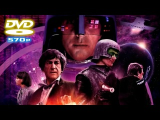
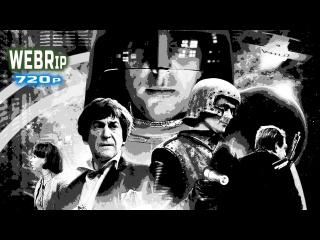
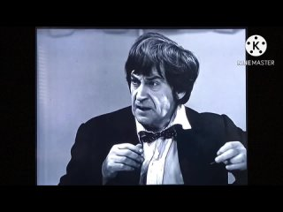
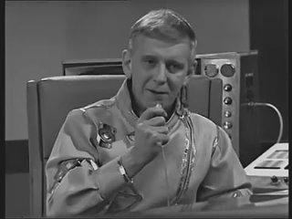
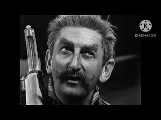
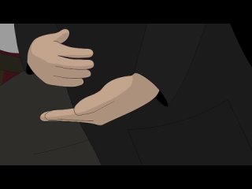
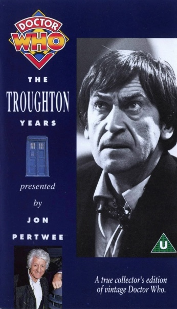
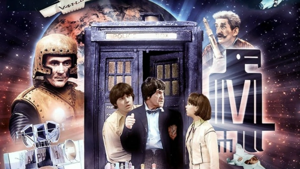
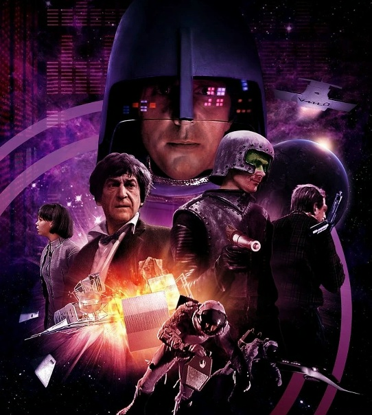
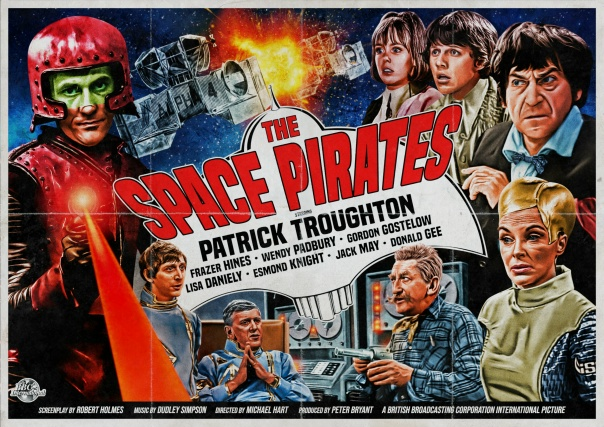

+ Реконструкция (эпизоды 1, 3–6) LCRecon Субтитры: Русские и Английские |  |
|---|---|
+ Фанатская CGI анимация (эпизоды 1, 3–6) WhoRecons Субтитры: отсутствуют |  |
 эп.1 - GWF DR WHO |  эп.1 - Отрывок- Аргонит (AL REVIEWS WHO) |
 эп.3 - Отрывок- Первые 11 минут (GWF DR WHO) |  эп.4 - Отрывок- Канцелярские кнопки (MaddoxProductions1) |
| Сохранился только 2-й эпизод - 35mm t/r * На утерянные (1, 3-6) эпизоды имеется: - реконструкция |
|---|
| |
Космические пираты взрывают навигационные маяки ради ценного минерала аргонита — фрагменты станций разлетаются по орбитам, и Доктор с Джейми и Зои оказываются заперты в одном из отсеков без доступа к ТАРДИС. Действие разворачивается в XXII веке: это история про охоту на преступников в космосе, где закон и пиратство ходят по тонкой грани. Особенность серии — масштабная «игра в кошки‑мышки» между Космическим Корпусом, пиратами и героями.
 VHS - 1991 |  DVD (2эп.) - 1 ноября 2004 * Версия в нашей группе |  LC recon - декабрь 2007 * Версия в нашей группе |
|---|


